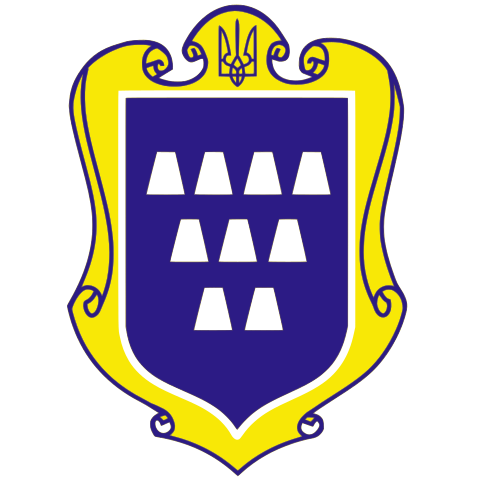

Дрогобич
Дрогобич — місто в Дрогобицькому районі Львівської області України.
Адміністративний центр
Дрогобицького району і Дрогобицької міської громади. У 1939–1941 і 1944–1959 роках — центр Дрогобицької
області.
Місто засноване наприкінці XI століття. Було центром староства Перемишльської землі. З XV століття місто
розвивалося, як, передовсім, ярмарковий і солеварний центр. Після Першого поділу Польщі Дрогобич відійшов до
Імперії Габсбургів. У середині ХIХz, століття перетворився на найбільший у Європі нафтовий центр, що сприяло
швидкому розвитку міста. З початку листопада 1918 — повітовий центр у складі ЗУНР, після Акту Злуки 22 січня
1919 — у складі ЗОУНР. Після анексії Польщею -— центр повіту Львівського воєводства у міжвоєнній Польщі. За
Пактом Молотова — Ріббентропа 1939 року анексований Радянським Союзом.
Сьогодні місто відоме як мала батьківщина Юрія
Дрогобича, Івана
Франка і Бруно
Шульца. У місті діяли численні нафтопереробні підприємства. Зараз у місті працює Дрогобицький
солевиварювальний завод, найстаріше діюче підприємство України.
Офіційна назва міста
Щодо походження назви не існує єдиної думки.
За найпоширенішою версією, біля соляного джерела в передгір'ї Карпат існувало поселення Бич, мешканці якого
торгували сіллю. Після нападу кочових племен половців наприкінці 11 століття місто було спалене. Через
деякий час жителі, які встигли сховатися від ворогів, повернулися і відбудували місто, але вже в трохи
іншому місці. Нове місто назвали Другий Бич, а з часом назва й перетворилася в Дрогобич.
Існує також версія, що назва міста походить від слів «другий бік» (які пізніше злилися), бо сучасне
місто почалося на другому боці річечки-потічка Побук (тепер Серет), навпроти солеварні.
Ще за іншою версією, назва походить від слова «драговина», що означає болотисте місце адже первісна
територія міста була дуже заболоченою. Також існує думка, що назва утворилася від особової назви Дорогоби,
пізніше сполонізованої.
Різними мовами назва транслітерується таким чином:
- англійською — Drohobych;
- польською — Drohobycz;
- їдиш — דראָביטש;
- німецькою — Drohobytsch;
- білоруською — Драгобыч.
Альтернативні назви Дрогобича
Літературний світ подарував місту кілька самобутніх імен: завдяки творам письменника Бруно Шульца Дрогобич часто подається (зокрема у ЗМІ), як «Цинамонове місто», «Столиця Всесвіту», або «Республіка мрій». Львівський письменник Станіслав Муеллер (Stanisław Antoni Mueller) у своїй повісті «Генрик Фліс» (1908) називає Дрогобич «Рокомишем». У збірці «Український постапокаліпсис» (2018) Дрогобич отримує назву «Місто рисових туманів»[6] (згідно однойменного оповідання авторства Олега Стецюка). Також Дрогобич неофіційно фігурує у своїй скороченій формі як «Дро». Поширеним є використання ще таких назв як «Місто Каменяра» або «Місто Котермака».
Символіка
Міські голови:
-
Кучма Тарас Ярославович (2015—2020)
- Теперішній міський голова
- Метик Тарас Михайлович, в. о.(2014—2015)
- Радзієвський Олексій Васильович (2010—2014)
- Гук Микола Петрович (2006—2010)
- Лужецький Михайло Петрович (2002—2006)
- Радзієвський Олексій Васильович (1998—2002)
- Лужецький Михайло Петрович (1996—1998)
- Глубіш Мирослав Іванович (1990—1994)
- Фурдин Осип Федорович, в. о.(1996)
- Дацюк Юрій Якович (1994—1996)